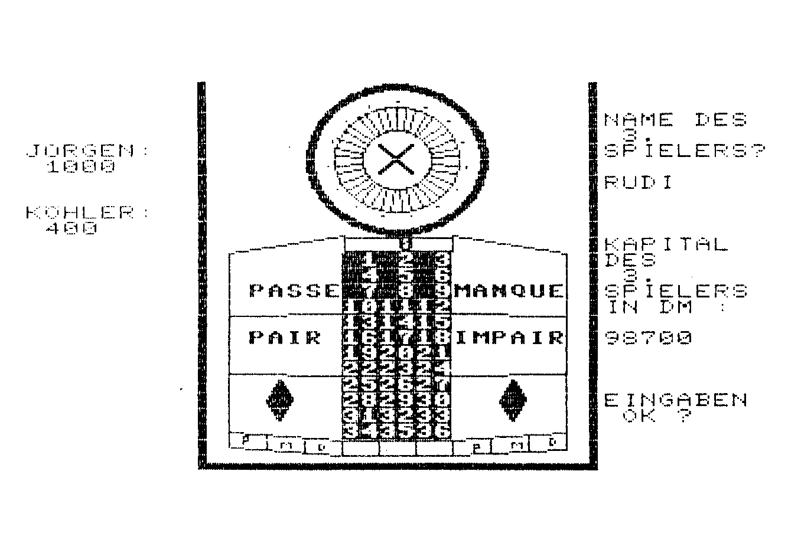
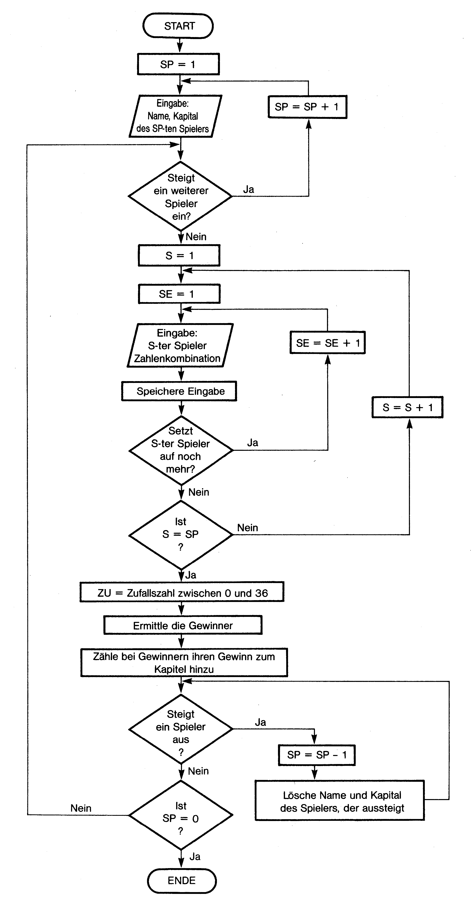
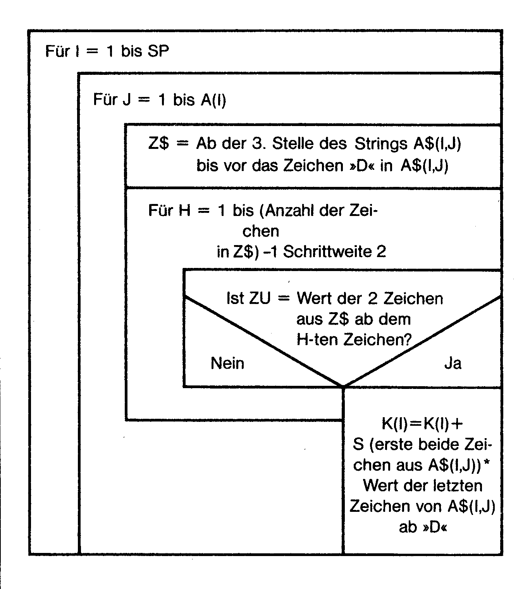

Roulette C 128
Hier präsentieren wir Ihnen eines der ersten Spiele im C 128-Modus. Es zeichnet sich durch alle Setzmöglichkeiten aus, die es beim richtigen Roulette auch gibt.
as Programm »Roulette 128 (siehe Listing) ist ein Basic 7.0 Programm und kann vom C 128 im C 128-Modus aus mit RUN "ROULETTE 128" von Diskette geladen und gestartet werden. Das Programm lädt keine weiteren Programmteile oder Filesnach, und es benötigt keine weitere Peripherie. Es werden nur die 40 Zeichen beziehungsweise die hochauflösende Grafik benutzt, ein spezieller Monitor für 80 Zeichen ist also auch nicht erforderlich.
Das Programm kann neben der Tastatur auch über einen Joystick bedient werden, der, falls vorhanden, in Port 2 zu stecken ist. Nach dem Start wird der FAST-Modus aktiviert, um Variablenfelder einzulesen und um den Grafik-Bildschirm zu erstellen (Bild 1). Der Vorgang dauert etwa 15 Sekunden.

Es können maximal 5 Spieler teilnehmen. Steigt ein Spieler ein, muß er Name und Startkapital eingeben. Nach jedem Spiel können ein oder mehrere Spieler ein- oder aussteigen. Spielt kein Spieler mehr mit, wird das Programm beendet.
Hat ein Spieler sein ganzes Geld verloren, scheidet er automatisch aus. Wenn nun alle Spieler mit den Eingaben fertig sind, wird das Spiel gestartet. Es erscheinen der Name des Spielers, der nun auswählen muß, worauf er wieviel setzt, und die Frage »MENUE ODER TABLEAU«(Tableau = Spieltisch, Bild 1). Jedem Spieler stehen also 2 Wahlmöglichkeiten zur Verfügung, »M« oder »I«. Wird die Taste »M« für Menü gedrückt, wählt der Spieler die Tastatur als Eingabegerät. Dazu werden ihm zuerst alle Sätze angeboten. Nach Wahl eines Satzes kommen auf den Bildschirm die jeweils möglichen Zahlenkombinationen. Mit der »NO-SCROLL« Taste kann ein eventuelles Herausscrollen aus dem Bildschirm verhindert werden. Der Spieler kann sich dann alle Kombinationen in Ruhe anschauen. Ein weiteres Drücken dieser Taste setzt die Auflistung fort. Jede Zahlenkombination ist mit einer »MENU-Zahl« versehen, die anschließend einzugeben ist.
Eine weitere Möglichkeit, dies auszuwählen, besteht darin, über Joystick auf dem Tableau selbst die Auswahl zu treffen. (Bei der Frage »MENUE oder TABLEAU« »I« drücken). Man bewegt dazu einen Chip mit dem Joystick. An der rechten Bildschirmseite werden bei Nicht bewegen des Joysticks der Satz und die Zahlenkombination angezeigt, auf der sich der Chip befindet. Durch Drücken des Feuerknopfes beendet man seine Wahl.
In beiden Fällen (Menü oder Tableau) kommt anschließend die Frage, wieviel man auf diese Zahl beziehungsweise Zahlen setzen will. Die eingegebene Summe muß kleiner gleich dem Kapital des jeweiligen Spielers sein, sonst nimmt das Programm die Eingabe nicht an. Nach Beendigung einer Wahl wird der Spieler gefragt, ob er es bei den bis dahin gewählten Zahlenkombinationen beläßt oder auf noch mehr Zahlen setzen will. Haben sich alle Spieler entschieden, »geht nichts mehr« und die Kugel rollt. Die Zahl, die gewinnt, wird angezeigt, und die Spieler, die auf diese Zahl in irgendeiner Weise gesetzt haben, gewinnen den ihrer Chance entsprechenden Betrag ihres Einsatzes.
Hinweise zum Abtippen
Von Zeile 7000 bis 7499 ist eine Fehlerbehandlungs-Routine eingebaut. Es ist sinnvoll, sie zuerst einzutippen. Durch den Befehl »IRAP 7000« in Zeile 12 wird sie aktiviert.
Grundlagen zu Roulette
Für das Verständnis des Programmes ist es wichtig, wenigstens die Grundbegriffe von Roulette zu kennen.
Als Satz bezeichnet man die 13 Arten, auf Zahlen zu setzen:
Plein (auf eine Zahl)
Cheval (auf 2 Zahlen)
Transversale plein (auf 3 Zahlen)
Carre (4 Zahlen)
Transversale simple (6 Zahlen)
Dutzend (1 bis 12, 13 bis 24 oder 25 bis 36)
Kolonnen (die 3 auf dem Tableau untereinander angeordneten Zahlenreihen, zum Beispiel 1,4,7,10,13, 16,19,22,25,28,31,34)
Manque (die Zahlen 1 bis 18)
Passe (die Zahlen 19 bis 36)
Impair (ungerade Zahlen)
Pair (gerade Zahlen)
Rote Zahlen und schwarze Zahlen.
Durch die Anordnung auf dem Tableau gibt es nun zum Beispiel bei »Transversale plein« 14 Möglichkeiten, auf drei Zahlen zu setzen. Im folgenden bezeichne ich dies als mögliche Zahlenkombination bei einem Satz.
Arbeitsweise des Programmes
Ich habe die 13 möglichen Sätze in 10 zusammengefaßt, indem ich zum Beispiel Schwarz und Rot als einen Satz mit zwei möglichen Zahlenkombinationen (zum einen die schwarzen Zahlen, zum anderen die roten) bezeichne. Genauso bei »Manque« und »Passe« und »Impair« und »Pair«.
In Z&X) wurde nun die Anzahl der Zahlenkombinationen des Satzes X abgelegt. Hierzu bekam jeder Satz eine Nummer:
Plein £ 1, Cheval & 2, Transversale plein & 3, Carre & 4, Transversale simple £ 5, Dutzend & 6, Kolonnen & 7, Manque/Passe # 8, Impair/Pair & 9, Rot/Schwarz & 10.
N$(CX):
Beinhaltet den Namen des Satzes X.
S(X):
Beinhaltet den Multiplikator des Satzes X, mit dem der Einsatz multipliziert werden muß, um den Gewinn zu erhalten.
Hier ist bereits - im Gegensatz zum richtigen Roulette, beidem der Einsatz noch hinzugezählt wird dieser bereits enthalten.
Anmerkung: Jeder Satz hat eine gewisse Chance, die mit der Anzahl der Zahlen steigt, auf die mit einer Zahlenkombination gesetzt werden kann. Die Chance bei »Plein« ist zum Beispiel sehr gering (1:36), bei Rot oder Schwarz sehr hoch (1:1). Dieser Chance entsprechend errechnet sich der Multiplikator.
SH(X,Y):
Die Zahlenkombination Y des Satzes X ist zum Beispiel S$ (5,11) = "313233343536", das heißt S$65,11) enthält die Zahlenkombination 31 bis 36 des Satzes Transversale simple (=5). Jede Zahl dieser Kombination hat 2 Ziffern.
In den DATA-Zeilen muß man nun je einen Satz als Block betrachten. Zum Beispiel Zeile 105 bis 109. Die erste Zahl in Zeile 105 ist die Anzahl der Zahlenkombinationen des Satzes - in diesem Fall Cheval -, also ist Z(2) = diese erste Zahl.
Die folgenden Daten werden in S$(X,Y) eingelesen. Auf sie folgt der Multiplikator des Einsatzes (S(X)) und als Abschluß der Name des Satzes. Von Zeile 200 bis 240 werden diese Felder eingelesen.
Der Aufbau des Programmes ist im Flußdiagramm zu sehen (Bild 2).

Erklärungen zum Flußdiagramm SP = Anzahl der Spieler
S = momentan bearbeiteter Spieler
SE = Eingabe des momentan bearbeitenden Spielers.
.Da jeder Spieler auf mehrere Zahlen setzen kann, bezeichnet SE, das wievielte Mal er dies tut.
Speichere Eingabe:
Der Spieler wählt mit dem Menü oder mit dem Joystick den Satz und eine Zahlenkombination aus. In A$(S,SE) wird nun zuerst mit zwei Ziffern der Satz gespeichert, dann die Zahlenkombination in der gleichen Form wie in S$(X,Y), gefolgt von dem Zeichen »D« als Ende-Kennzeichen der Zahlenkombination. Aus technischen Gründen folgt dem ein Leerzeichen und schließlich der Einsatz in DM.
Zum Beispiel A$(2,1) = "020912D 50":2. Spieler, 1. Eingabe auf Cheval, die Zahlen 9/12 mit DM 50... In A(X) wird die Anzahl der Eingaben - also SE - vom Spieler X gespeichert.
Ermittle Gewinner Zähle bei Gewinnern....
In Bild 3 ist das zu diesen Anweisungen gehörende Struktogramm zu sehen.

K(X) = Kapital des Spielers X. Diese Auswertung ergibt sich aus der Speicherung in A$(X,Y).
Es sieht komplizierter aus, als es ist, spart Jedoch im Computer Speicherplatz.
Zur Auswahl über Joystick
Das Herz des Tableaus stellen die Zahlen 1 bis 36 dar. Sie sind symmetrisch angeordnet, und man kann auf Ihnen die Sätze Plein, Cheval, Transversale plein, Carre, Transversale simple setzen. Diese ergeben zusammen die meisten Zahlenkombinationen des Spieles. Befindet sich das Chip innerhalb dieses Bereiches, kann man eine X-Koordinate zwischen 0 und 23 und eine Y-Koordinate zwischen 0 und 6 errechnen. Danach läßt sich ein 2-dimensionales Feld aufbauen, das durch diese X- und Y-Koordinate bestimmt ist. Ich wählte dazu XHXY).
Jede Variable dieses Feldes enthält drei Zeichen. Das erste gibt den Satz an und die letzten beiden die wievielte Zahlenkombination gewählt wurde. Somit läßt sich die Zahlenkombination, auf die gesetzt werden soll, eindeutig ermitteln. Für den Satz ist nur ein Zeichen erforderlich, da die möglichen Sätze nur Plein bis Transversale simple umfassen (entsprechen 1 bis 5). Alle Positionen des Chips, die außerhalb dieses Bereichesliegen, es sind insgesamt 13, müssen einzeln abgefragt werden.
(Jürgen Kohler/ah)